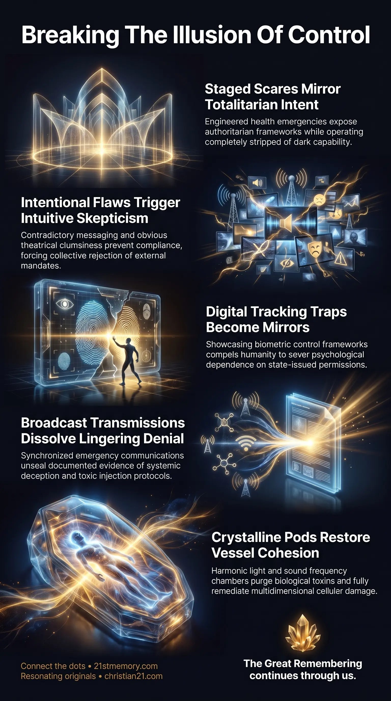

The Scripted Virus
The Scripted Virus — A theatrical health threat staged to expose authoritarian control without genuine dark functionality.

Watch this series on YouTube — every video dubbed into 20 languages. Tap the settings gear on any video, then Audio track, to hear it in yours.
The Scripted Virus — A theatrical health threat staged to expose authoritarian control without genuine dark functionality.

The Global Health Scare Is Controlled Theater — An exaggerated virus narrative that shows the control framework so the public can reject it.
The Scripted Virus represents a controlled theatrical narrative and psychological clean-up operation deployed to expose the latent mechanisms of institutional tyranny without executing true systemic destruction. Within the broader sequence of scripted exposures, this health scare functions not as a genuine biological trap or weapon of mass subjugation, but as an orchestrated mirror that reflects the authoritarian ambitions of dismantling parasitic systems. By projecting an impending pandemic or health emergency into the public sphere, the operation captures collective attention and surfaces the oppressive infrastructure of digital tracking, vaccine mandates, and surveillance architecture. Rather than operating as a discrete, privatized medical crisis or a standalone rescue product, this event is engineered directly into the unfolding disclosure architecture. It forces dormant populations to confront the totalitarian potentials of regulatory authority while operating completely stripped of dark systemic capability. The overarching function of the script is educational and transmutative: by demonstrating the exact parameters of intended control through transparently clumsy execution, it compels the collective consciousness to reject external authoritarian dictates and reclaim internal sovereignty.
The emergence of an orchestrated pandemic alert is fundamentally decoupled from true administrative control. The infrastructure of the previous parasitic regime has already been dismantled, leaving behind an automated theatrical production managed by allied command structures to run scripted disclosures. The threat of a viral contagion is weaponized against the control system itself: by allowing the apparatus to announce its authoritarian intentions in plain sight, the public is granted an unvarnished view of the control framework without enduring its intended functional lethality. The disclosure surrounding health scares and biological intervention is inextricably woven into the Emergency Broadcast System (E.B.S.) transmission phase. It does not arrive as an isolated pharmaceutical remedy or a separate political campaign, but sits squarely among the cascade of unsealed disclosures regarding financial fraud, institutional trafficking, and compromised leadership. Revealing the toxicity of chemical injections acts as an indispensable shockwave that dissolves lingering denial, forcing the collective to confront the reality of deliberate de-population plans. Furthermore, the resolution of physical damage caused by mandatory inoculations does not rely on third-density human inventions. Fictional concepts such as mechanical "med beds," popularized by surface-level speculative movements, are deceptive approximations of authentic healing architecture. True biological and energetic restoration is accomplished solely through higher-dimensional frequency pods that interact directly with the vessel's crystalline template.
The rollout of the virus narrative relies deliberately on an exaggerated, artificial presentation characterized as an obvious clown show. Because mass consciousness cannot be shaken awake through abstract philosophical concepts alone, it requires dramatic sensory demonstration. The operations are intentionally staged with sloppy communication, contradictory official messaging, and public figureheads who visually and behaviorally resemble scripted actors. This theatrical incompetence is by design. The apparent clumsiness ensures that the simulation cannot solidify into a permanent regime of terror. Instead of producing total compliance, the erratic delivery triggers intuitive skepticism, causing populations to perceive the mechanical absurdity of the mandates and push the illusion away through collective non-compliance.
The core mechanical objective of floating a viral emergency is to construct a potent attention hook. The original parasitic blueprints sought to bind biological travel restrictions to Digital ID, central bank digital ledgers, and social credit tracking. Following the disruption of core subterranean nodes and parasitic command chains during initial security operations, this totalitarian blueprint lost its operational teeth. Under current strategic direction, the digital identification agenda is re-presented to the public through the guise of the viral threat. The system is allowed to showcase its full authoritarian framework so that the collective mind can recognize the trap, react with visceral rejection, and permanently sever its psychological dependence on state-issued permissions. This turns what was meant to be a digital cage into a mirror of awareness.
Within the phased disclosure timeline, the exposure of medical deception is synchronized with military communication takeovers. Following initial soft reassurances broadcast to stabilize civilian shock, the transmissions transition into unrelenting harder truths. The medical disclosure segment unseals documented proof regarding toxic substances embedded in mass inoculation programs, spanning childhood schedules such as the MMR vaccine to modern synthetic injections. The evidence details systematic depopulation protocols engineered by transnational networks. This disclosure is not packaged as a partisan revelation or a proprietary medical breakthrough; it is delivered alongside the documentation of systemic election subversion, ritual trafficking rings, and the exposure of cloned or masked leadership. The simultaneous release of these interrelated disclosures ensures that the illusion of benevolent governance collapses irrevocably in a single operational window.
[Phased Disclosure Stream]
│
├─► Soft Reassurance (Civilian Stabilization)
│
└─► Harder Truth Packages (E.B.S. Transmission)
├── Systemic Corruption & Trafficking
├── Puppet Leadership & Lineage Realities
└── Medical & Vaccine Truth
├── Poison-Toxic Injections (MMR, Covid)
├── Institutional Depopulation Agendas
└── Cellular Remediation via Crystalline Pods
The aftermath of the medical exposure introduces authentic biological remediation. Third-density human technology lacks the capacity to reverse advanced biogenetic and energetic interference introduced by synthetic compounds. Surface truther narratives that promote mechanical med beds offer an incomplete and distorted interpretation of the actual curative instruments. True biological rehabilitation for vessels damaged by toxic inoculations is executed through crystalline pods. Operating as living light and harmonic sound chambers, these pods interface directly with the multidimensional template of the human vessel. By applying precise resonant frequencies, they purge chemical toxins, neutralize foreign genetic code, and restore cellular cohesion across suppressed biological systems.
The Scripted Virus operates as an integrated component within the scripted exposure branch of the blackout sequence, connecting directly to broader logistical measures. During the revelation cycle, movement restrictions are enforced not as tyrannical medical quarantines, but as protective military stabilization windows designed to prevent chaotic civilian reactions while broadcasts are running. Laterally, the topic connects to the dismantling of institutional authority. The collapse of trust in medical licensing boards, pharmaceutical combines, and global health bodies accelerates the dissolution of the entire commercial apparatus. Once the medical deception is unmasked, the energetic foundation that justified regulatory domination over human biology disintegrates, allowing the physical realm to prepare for higher frequency integration and the re-establishment of crystalline governance.
The operational execution of the Scripted Virus yields decisive civilizational consequences: Annihilation of Authoritarian Trust — Forcibly breaks the hypnotic deference that sleepers and non-player characters exhibit toward institutional hierarchies and external authorities. Preemption of Totalitarian Systems — By staging the digital control and vaccine apparatus in a hollow, exaggerated manner, the timeline for true biometric enslavement is permanently broken and rejected by the collective. Catalysis of Rapid Awakening — Shocking revelations regarding injection toxicity and population reduction protocols convert lingering complacency into righteous discernment and mass awakening. Shift to Harmonic Healing — Eliminates dependence on synthetic pharmaceutical industries and redirecting awareness toward organic frequency restoration and crystalline cellular technologies.
This topic is free to share. Support the archive →